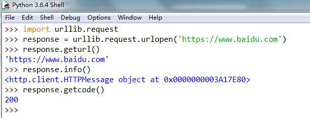

urilib:
python内置的一个HTTP请求库
- urilib.request：请求模块
- urilib.error：异常处理模块
- urilib.parse：url解析模块
- urilib.robotparser：robots.txt解析模块
urlopen( )
urllib.request.urlopen(url, data=None, [timeout, ]*, cafile=None, capath=None, cadefault=False, context=None)
url:请求的资源所在的url,必填
data:接受默认值，就是get()方法；传递参数就是post()方法
timeout:响应超时设置
返回对象的方法:
geturl():重新返回请求的资源地址，常用来查看是否发生了重定向
info():返回页面的元信息，例如请求头
getcode():返回响应的状态码
import urllib.request
response = urllib.request.urlopen('https://www.baidu.com')
response.geturl()
response.info()
response.getcode()

data
响应状态:404找不到页面，200访问成功，301跳转，502服务器错误
响应头:如内容的类型，内容长度，服务器消息，设置Cookies等等
响应体:最主要的部分，包含了请求资源的内容，如网页的Http文件，图片等二进制数据
代码实例
import requests #导入requsets库
response = requests.get('http://172.23.231.61') #利用get()方法向服务器发起请求
print(response.status_code) #打印请求的状态码
print(response.headers) #打印请求头信息
print(response.text) #打印请求体内容